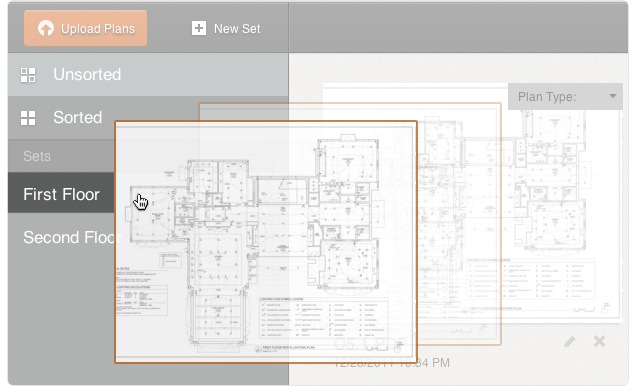
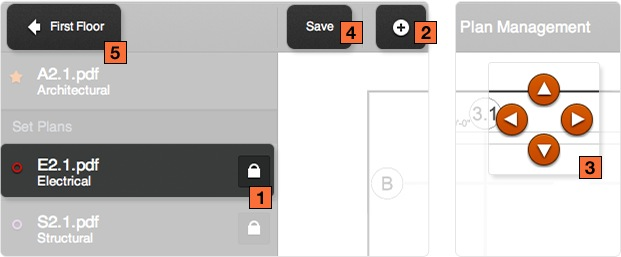

Plan Management
In this section you will learn how to create and organize sets, assign plan types, and align your plans.
Create Sets
Sets are a group of plans that make up individual floors on your project. For instance, the first floor on your project may have architectural, structural, electrical, and mechanical sheets. Sets are a way of organizing multiple sheets into one group.
New Sets
Create as many sets as you have distinct floors with plan pages. There are no limits to how many sets you can have.
Tip: Most sets should be labelled First Floor, Second Floor, etc.
Tip: If you've got a set of plans that have a match line, you'll need to create specific sets for each side of the plan. (1st floor West, 1st floor East, etc).
Organize Sets
After you've finished creating your sets you’ll want to organize your plans into their corresponding sets.
Unsorted vs. Sorted Sets
Plan Management gives you various ways to view your plans. You can view plans that still need to be organized separately from plans that have already been organized. These two sections are titled Unsorted and Sorted.
Preview Plans
You can click on the plan thumbnails and view them in greater detail. This will help you confirm that your plans are named correctly and you're organizing them correctly.
Drag & Drop
From the unsorted folder, drag your plans into their corresponding sets. You can also drag plans from one set to another.
Plan Types
By organizing your plans by plan type, Threshold allows you to align your plans and drastically reduce the time it takes to organize and tag your photos.
Architectural Plans
The most important plan type in Threshold is the Architectural plan. You'll be aligning all your plans against your Architectural plan. To align your plans you’ll need to select one of your plans as Architectural.
Each set can only have one specific plan type. If you've got a set of plans that has a match line, you'll need to create specific sets for each side of the plan. (1st floor West, 1st floor East, etc).
You'll be using your architectural plans extensively in future tools so it's critical to have an architectural plan selected.
Unspecified
Threshold uses nine standardized trades to assist you in photo tagging. When you upload plans to Threshold they’re labeled as "Unspecified" by default. If your plans don't fall into any of the nine categories you can leave the label as "Unspecified". There is no limit to the number of unspecified plans you can have.
After you've finished selecting plan types, continue on to alignment.
Alignment
Alignment speeds the process of setting up your project. This step is helpful in cases where your plans have different sized margins.
Select the Alignment button
The alignment button is only accessible when you have selected an Architectural plan. You'll be aligning all other plans in your set against the Architectural plan.
Align your plans
When you enter the alignment tool, you'll be viewing your architectural plan by default. This plan is locked so it cannot be manipulated. To align your plans select one from the left hand tool bar.
Once you've selected a plan to align, you'll see your plans overlapping. To begin aligning your plans you must first unlock your non-architectural plan. The plan you can drag around is your non-architectural plan. To unlock your plan click the lock icon on the left side tool bar. After unlocking your plan, click and drag your plans until they’re properly aligned.
For your alignment to take effect you must save your changes before leaving the page.
Alignment Tools
- BackYou can return to the plan management page by clicking back on the toolbar.
- Unlock your plans Your plans are locked by default. This prevents unintended alignments from occurring. To unlock your plans click the lock icon.
- Save You must hit the save button to lock all of your plans before leaving the alignment page.
- Zoom Allows you to zoom in or out to gain perspective when aligning.
- Nudge Moves your plan by one pixel increments to align precisely.